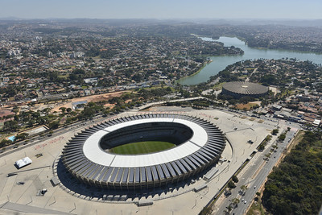
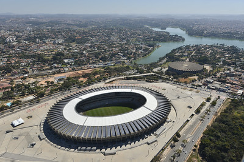
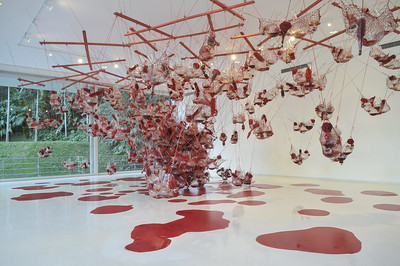
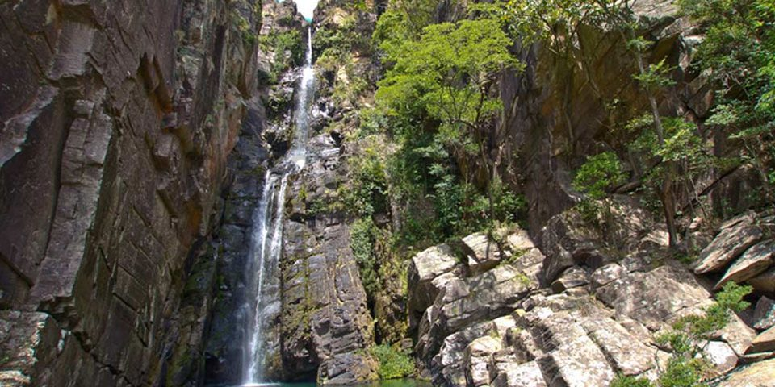

Pontos Turísticos
Nesta seção serão apresentados cinco pontos turísticos de Minas Gerais.
Museu da Inconfidência - Ouro Preto
O museu da Inconfidência, anteriormente Casa de Câmara e Cadeia de Vila Rica, inaugurado em
1944, traz a história não somente dos inconfidentes, mas de Ouro Preto no geral, incluindo Aleijadinho e
Mestre Ataíde é um passeio recheado de beleza e de conhecimento.

Lagoa da Pampulha - Belo Horizonte
Com o conjunto arquitetônico projetado por Oscar Niemyer tombado patrimônio cultural da humanidade e
próxima
do estádio
Mineirão, a Lagoa da Pampulha é um bom passeio para quem deseja praticar esportes ou apenas apreciar a
vista.
 

Instituto Inhotim - Brumadinho
Considerado o maior museu a céu aberto do mundo possui para além de suas obras de arte contemporânea
(algumas em exposição permanente e outras temporárias) um jardim botânico que impressiona.

Casa de Cacos - Contagem
A Casa de Cacos foi construida por Carlos Luís de Almeida a partir de 1963 até sua morte, em 1989. Em
1991
a casa foi adquirida pela prefeitura. A Casa de Cacos é repleta de mosaicos feitos com cacos de
diferentes
origens.
Esse ponto turístico é excelente para os amantes da arte e da arquitetura.

Cachoeira Véu da Noiva - Serra do Cipó
Localizada em uma propriedade privada da ACM, a Cachoeira Véu da Noiva inaugurada em 1980 tem uma queda
de
70 metros
e é uma boa opção tanto para quem quer fazer uma visita rápida como para quem quer se hospedar.
